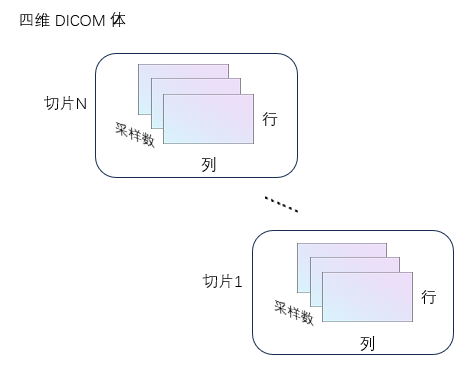
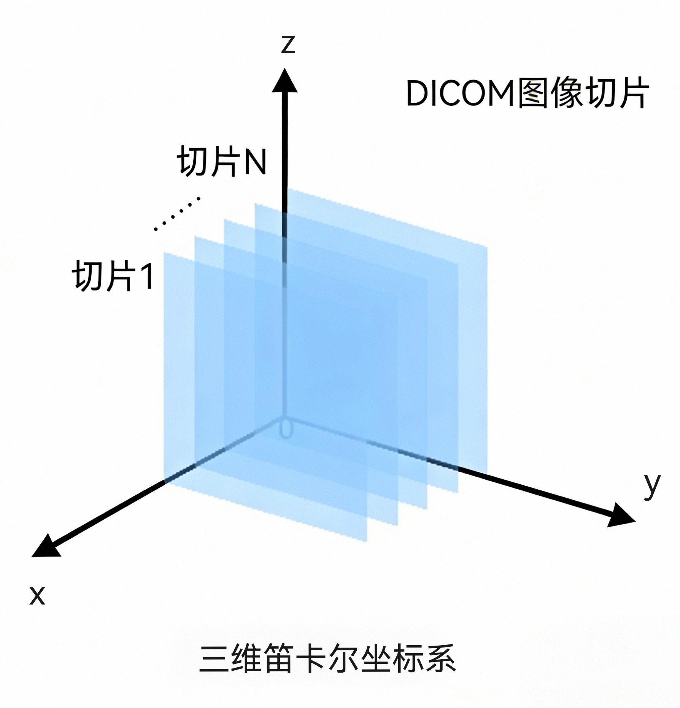

从一组 DICOM 图像创建四维体数据
V = dicomreadVolume(source)
V = dicomreadVolume(___, "MakeIsotropic", tf)
[V, spatial] = dicomreadVolume(___)
[V, spatial, dim] = dicomreadVolume(___)
V = dicomreadVolume(source) 可根据输入参数 source 所指定的一组 DICOM 文件，创建一个四维体数据 V。该函数会自动对四维体数据中的图像切片进行排序，确保其顺序正确。
V = dicomreadVolume(___, "MakeIsotropic", tf) 利用前述语法中的任意输入参数组合，从输入的 DICOM 图像数据创建一个各向同性的四维 DICOM 体数据。当输入数据为各向异性的 DICOM 图像序列时，可使用此语法创建各向同性的 DICOM 体数据。
[V, spatial] = dicomreadVolume(___) 这种调用形式还会额外返回一个结构体 spatial，该结构体描述了输入 DICOM 数据的空间位置、分辨率以及空间朝向信息。
[V, spatial,dim] = dicomreadVolume(___)在上述功能基础上，额外返回一个维度索引 dim。该索引指向输入 DICOM 数据中，相邻切片之间偏移量最大的那个维度。
source — 体数据文件夹或文件
字符串标量 | 字符向量 | 字符串数组 | 字符向量元胞数组
体数据文件夹或文件，指定为字符串标量、字符向量、字符串数组或字符向量元胞数组。
数据类型： char | string
指定是否创建各向同性体数据，取值为逻辑值 0 (false) 或 1 (true)。
由 source 指定的输入数据可以是各向同性的，也可以是各向异性的 DICOM 数据。
四维 DICOM 体数据，以数值数组形式返回。V 的维度为 [行数, 列数, 采样数, 切片数]，其中采样数表示每个体素的颜色通道数。

spatial — 输入 DICOM 图像的空间位置、分辨率及朝向信息
结构体
从输入 DICOM 图像的元数据中提取的切片空间位置、分辨率和朝向信息，以包含下述字段的结构体形式返回。
| 字段名 | 说明 |
|---|---|
| PatientPositions | 每个切片中第一个像素点的 (x, y, z) 坐标，以扫描仪坐标系原点为基准，单位为毫米。 |
| PixelSpacings | 每个切片内相邻行、列像素之间的距离，单位为毫米。 |
| PatientOrientations | 一对方向余弦三元组，用于指定每个切片中行、列方向相对于患者体位的朝向。 |
偏移量最大的维度，返回值为 1、2 或 3。该值表示在三维坐标系中，输入 DICOM 数据相邻切片间偏移量最大的维度。

DICOM 图像切片的三维表示：
在北太天元图像处理工具箱 V3.0 推出
DICOM Browser | dicominfo | dicomread | dicomCollection | tiffreadVolume